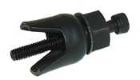
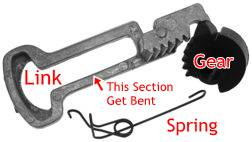
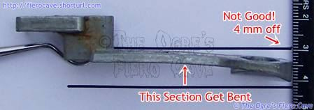

While written for Fiero, this section applies to many GM vehicles. It even applies to cars from other manufacturers using Saginaw steering columns.
Failure of any part of the steering column can result in injury or death! If you have any question of the quality of the column or a component then replace it! Do Not drive a car with a damaged column.
Do NOT attempt to repair the tilt unit unless you know exactly what you are doing, or have the help of someone who has done this work regularly. Tilt steering columns contain very strong springs that can hurt you if not properly handled.
Do Not pry on or strike cast parts. They will likely break.
Do Not strike the shaft to remove the steering wheel. This will damage the shaft and flex joint in tilt units.
Don't discard the plastic trim that snaps on the lock plate. The trim helps prevent objects from entering the column. Foreign objects in the column could cause a short circuit or damage the turn signal parts.
Note: To remove the steering column you must remove the pinch bolt from the universal joint under the dash to disconnect the column. The shaft is notched so that even if the bolt is loose the joint won't come off. (This applies to the universal at the steering rack as well.)
There are pictorials of most of the column disassembly at Oliver's Fiero Pages and JazzMan is here(PDF, Right Click and use Save Link). This should help you with all the common fixes, including the flopping tilt unit problem.
First need to isolate which part of the system has the problem.
Quicker way:
Better? Rack got a problem
Same? Steering column or intermediate shaft is damage.
Steering vs. intermediate shaft just need to move vise grip to top section, above upper U joint, and then test again.
Better? Intermediate shaft has damage. Get another Intermediate shaft.
Same? Column likely lost plastic "shear" or Tilt Ball. If the Shear is bad then need another steering column.
There are 4 screws buried deep in the tilt head that cause this. This problem can usually be fixed but it requires the complete tear down of the top end of the column. Unless you have worked on steering columns before, I really don't recommend that you fix this problem yourself. It requires several special tools to get the thing apart and the experience to know when to scrap a part or the entire column. Failure of any part of the steering column can result in injury or death!
For those who do attempt this, there are several areas that must be inspected carefully. If ANY of these areas shows damage or wear it must be fixed properly. The column must be scrapped in some cases. You will also need some special tools that often cost around the same amount as a salvaged column would. I do work on columns semi regularly, so I have the tools. It really isn't worth buying/making the tools if a salvage column can be found.
Be careful as you take the column apart. There are things in there that could hurt you. There are also some loose ball bearings. Make sure you don't lose anything. Lay out the parts in the order you remove them. If you run into problems then stop and get help. Don't guess.
The tilt unit can be fixed in the car, but make sure you have something to keep all the little parts and screws organized. Many of those little parts aren't easy to replace if you loose them. Egg boxes come in handy for this.
When you dig down to them the 4 screws should be removed. Clean and dry the screws and holes. Apply Loc-Tight, and install the screws. You don't want to have to do this twice. Don't over torque the screws! Cross-tighten them or you could break the aluminum tilt body.
Notes:
The tilt spring must be removed before pulling the pivot
pins.
Screw is NOT metric. Tilt pin puller screw = SAE 8-32.
If you are doing this type of work frequently, the tool to remove the Pivot pins from the column is available thru Lisle Tools.
Part #: 19940
Pivot Pin Remover.
Removes the pivot pin on GM, Ford and Chrysler
tilt and telescoping Saginaw steering columns.
Skin-packed.
You can make a puller from a small iron pipe cap, nut and screw. Stainless steel screws are stronger if you can get them. Drill a hole in the cap and use the nut and screw to pull the pin. (Use the smallest cap that will clear the pin.)
You could also use a nut screw and a hammer but be very careful or you could break the casting! Buying or making a puller is safer if the pins are stuck tight. In this case, you want a nut that is big enough to pass over the pin. You want to pry against the nut, not directly on the casting. Again, be very careful or you can break the casting.
Note: Information on the ignition interlock was moved to the auto shifter article in the "Axle and Transmission" department.
Maybe the switch is bad but another item... Linkage section between Switch and Lock gets bent.

Check very carefully the linkage. Linkage can die as well because bad switch overloads it. If link is anything but straight then is bad. Do Not try to fix it. Bend then straighten makes it weak so replacement is only option. Check gear teeth to.

To buy a new linkage, NAPA or Dorman's HELP! is the answer at most auto part store.
Always replace ignition switch when you replace linkage! You do not want to replace the linkage twice!
Below is a list of common service items in the steering column. It is not a list of every part in there. The Prime Rule for fixing the column is "If in Doubt, Throw It Out!7quot; Do Not take chances with iffy parts.
| Area To Inspect. | Problem(s) To Look For. | Corrective Action. | Part availability |
|---|---|---|---|
| Lock Plate | Edge Burrs or "flash" | File edges clean. | Not Applicable |
| Lock Pin | Binding or not extending | Clean Pin, Replace Spring. | Salvage |
| Turn Signal Selector | Cracking in plastic parts | Replace Selector | Salvage or OTC |
| Turn Signal Lever | Cracking in plastic parts | Replace Lever | Salvage or OTC |
| Ignition Lock | Lock or Drive Gear wear | replace worn part | Salvage or OTC |
| Ignition rack gear & linkage | Cracking or wear | replace worn part | Salvage or OTC |
| Upper shell | Cracking or wear | replace cracked or excessively worn shell. (now would be a good time to paint it.) | Salvage |
| Steering shaft "ball" joint | Worn ball or bearings | Scrap column & get another | Salvage |
| Tilt pivot point | Pivot loop cracks or excessive wear. Damaged pins. | Scrap column & get another | Salvage |
| Tilt latch | Latch teeth/pin worn or damaged | Scrap column & get another | Salvage |
OTC = Over The Counter. Try local parts outlets, or GM/Pontiac dealer part departments. Take the bad part with you. Check the red "HELP" blister packages for the ignition rack gear, and turn signal selector.
This column can be found in a number of GM cars. That I'm aware of, all of these Saginaw columns are the same except for some trim at the base of the tube. The trim is removable. Take your bad column with you just to make sure you get one that is correct.
Salvage operations will rarely let you have just a part off a column. If you have to go to this much trouble you may as well get the whole thing. 2 Bolts, 2 Studs, and a bolt through the universal joint under the dash hold the column. Note: You must remove the pinch bolt from the universal joint to disconnect the column.
The straight and Tilt columns are interchangeable. I think the Tilt/Telescope units are also interchangeable but I can't say for sure that they will fit properly in Fiero.
There are many parts for the column available via the GM dealer network. My feeling is that if you have to go to that much trouble, it's easier to just get a good column.
The following parts for the column are confirmed available thru MotorMite's HELP! Series.